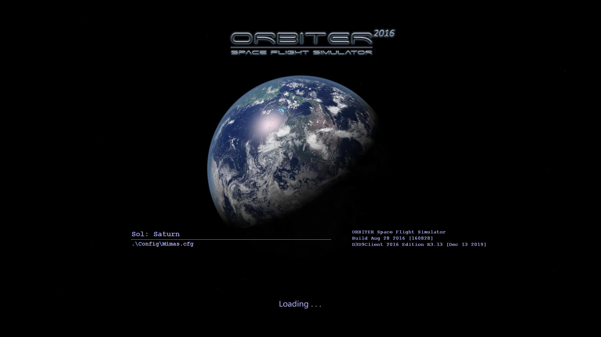
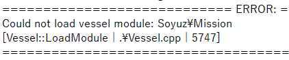
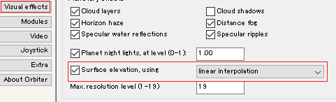
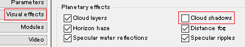

既知の不具合
Orbiterのバグ・トラブルなどのまとめです。
- 読み込み中に強制終了する
- Spacecraft3.dllで強制終了する
- D3D9Clientでゲームを起動できない
- 宇宙船が見えない
- ゲーム中に強制終了する
- 宇宙船の回転が止まらなくなる
- 画面がぼやける
- MFDの反応が遅い
- 音声が再生されない
- MODの音声が再生されない (2016)
- Windowsのフォントが汚くなる (2016)
- 地面を走行できない (2016)
- 機体が地面に沈む (2016)
- 機体が横滑りして静止できない (2016)
- 木星・タイタンの表示がおかしい (2016)
- MODの不具合
- DeltaGliderIV
該当するものがない場合は、下記ページにて報告してください。
バグ・トラブルを報告する
読み込み中に強制終了する
症状
ゲーム開始時のロード画面にて強制終了する。

原因
モジュールの読み込みに失敗している。
モジュールそのものが壊れているか、必要なファイルをインストールしていない可能性がある。
Spacecraft3.dllを使用するMODの場合は下記を参照。
Spacecraft3.dllで強制終了する
対策
OrbiterフォルダにてOrbiter.logというファイルを探す。
Orbiter.logをメモ帳などのテキストエディタで開く。
エラーが発生している場合は、ERROR以下の行に原因が表示される。
トラブルの原因と無関係なものもあるので、内容をよく確認すること。
Could not load vessel moduleと書かれている場合は、宇宙船のモジュールの読み込みに失敗している。

必要なファイルが揃っているか確認する。
足りないファイルがある場合は、インストールしてもう一度ゲームを開始する。
必要なファイルがすべて揃っている場合は、開発者に報告する。
以下のページでもバグ報告を受け付けています。
バグ・トラブルを報告する
Spacecraft3.dllで強制終了する
症状
Spacecraft3.dllを使用する宇宙船において、読み込み中に強制終了する。
原因
D3D9Clientでシンボリックリンクを作成していない。
対策
下記のページを参照して、シンボリックリンクを作成する。
D3D9Clientを導入する
D3D9Clientでゲームを起動できない
症状
D3D9Clientを使用している環境において、ゲームの起動時に強制終了する。
以下のようなメッセージが表示される。
The program can't start because d3dx9_42.dll is missing from your computer
原因
PCにDirectX9.0cがインストールされていない。
Windows10にはDirectX9.0cは同梱されておらず、別途インストールする必要がある。
また、DirectX12は9.0cの代わりにはならない。
対策
下記ページを参照して、DirectX9.0cをインストールする。
D3D9Clientを導入する - DirectXのダウンロード・インストール
宇宙船が見えない
症状
ゲーム内において、存在するはずの宇宙船が見えず、操縦もできない。
原因
宇宙船の読み込みに失敗している。
宇宙船のファイルが壊れているか、必要なファイルをインストールしていない可能性がある。
対策
必要なファイルが揃っているか確認する。
足りないファイルがある場合は、インストールしてもう一度ゲームを開始する。
必要なファイルがすべて揃っている場合は、開発者に報告する。
以下のページでもバグ報告を受け付けています。
バグ・トラブルを報告する
ゲーム中に強制終了する
症状
ゲームは起動するが、プレイの途中で強制終了する。
原因
多段式ロケットなどにおいて、分離したモジュールが原因で問題が発生することがある。
また、MODによっては特定の操作をすると強制終了することがある。
対策
シナリオエディタを使って、不具合の原因になっている宇宙船を削除する。
シナリオエディタ 宇宙船の追加・削除
特定の操作が原因で強制終了する場合は、開発者に報告する。
以下のページでもバグ報告を受け付けています。
バグ・トラブルを報告する
宇宙船の回転が止まらなくなる
症状
宇宙船が高速回転して、KILL ROTオートパイロットでも止めることができない。
原因
ProGradeなどのオートパイロットを実行中にタイムワープを使うと発生しやすい。
対策
ゲーム内でCtrl+F4を同時押しして、Custom Functionsの選択画面を開く。
Scenario Editorを選択してOKをクリック。
Edit→Angular Velocityと進んで、出てきた画面でKillをクリック。
画面がぼやける
症状
Intel HD Graphicsを使用しているPCにおいて、ゲーム画面が全体的にぼやけたような感じになる。
対策
インテルグラフィック／メディアコントロールパネルを開く。
3D→3D基本設定のスライダーを品質に設定する。
MFDの反応が遅い
症状
MFDのボタンをクリックしたときの反応が遅い。
MFD上のデータの更新が遅い。
対策
以下のページを参照して、MFDの更新速度を設定する。
音声が再生されない
症状
ゲーム内でエンジン音など一切の音声が再生されない。
原因
Orbiter2010、Orbiter2016には音声を再生する機能が存在しない。
ユーザーが音声再生MODを導入する必要がある。
対策
Orbiter2010ならOrbiterSound 4.0、Orbiter2016ならXRSoundを導入する。
ModulesタブでOrbiterSound/XRSoundにチェックを入れる。
以上のMODを導入しているのに音声が再生されないときは、下記ページにて報告してください。
バグ・トラブルを報告する
MODの音声が再生されない (2016)
症状
MODに固有の音源（打ち上げカウントダウンなど）が再生されない。
原因
Orbiter2016には、XRSoundとOrbiterSoundの2種類の音声再生MODがある。
XRSound向けの音源はOrbiterSoundで再生されない。
OrbiterSound向けの音源はXRSoundで再生されない。
対策
SoundBridgeというMODを導入する。
- XRSoundを導入している
- OrbiterSoundを導入している
Windowsのフォントが汚くなる (2016)
症状
Orbiter2016において、ゲーム終了後にWindowsのフォントのスムージングが解除される。※
※文字のふちがギザギザした感じになる。
対策
Enforce font smoothing on exitを有効にする。
手順は以下のページを参照。
Orbiter2016のダウンロード+インストール - 文字のスムージング
地面を走行できない (2016)
症状
Orbiter2016において、滑走路などを走行できない。
原因
Orbiter2010のMODをOrbiter2016で使用している。
Orbiter2016で着陸関連の仕様が変更されたため、Orbiter2010のMODは地面を走行できないことが多い。
対策
存在しない。
MODそのものを2016に合わせて改変しない限り改善しない。
機体が地面に沈む (2016)
症状
Orbiter2016において、機体が斜面などに沈みこんでしまう。
原因
描画される地面と、実際の当たり判定が一致していない。
Orbiter2010のMODを使用している場合は上記を参照。
対策
D3D9Clientの最新版をインストールする。
LaunchpadのVisual effectsのタブを開く。
Surface elevation, usingの右のドロップボックスでlinear interpolationを選択する。

機体が横滑りして静止できない (2016)
症状
Orbiter2016において、着陸時などに横滑りしてしまい、その場で静止することができない。
対策
Ctrl+Pを押して一時停止する。
シナリオエディタを開く。
Ctrl+F4を押して、Scenario Editorを選択してOKをクリック。
Edit→Locationをクリック。
右下のApplyをクリックする。
Ctrl+Pを押して、一時停止を解除する。
木星・タイタンの表示がおかしい (2016)
症状
Orbiter2016+D3D9Client環境の木星やタイタンなどにおいて、表面が暗くなったり、テクスチャの表示が乱れる。
対策
LaunchpadのVisual effectsのタブを開く。
Cloud Shadowsのチェックを外す。

この操作をすると雲の影が表示されなくなるので、地球に帰るときには元に戻しておく。
MODの不具合
MODに固有の不具合のうち、確認できているものについてはインストールおよび操作解説の記事に書いてあります。
紹介されていない不具合に遭遇した場合は、下記ページにて報告してください。
バグ・トラブルを報告する
DeltaGliderIV
症状
DeltaGliderIVというMODにおいて、TransXなどのオートパイロットが機能しない。
原因
DeltaGliderIVは独自のオートパイロットを搭載しており、これがTransXなど他のMODのオートパイロットと干渉する。
このような理由で、当サイトではDeltaGliderIVの解説を掲載していない。
2021年3月現在、DeltaGliderIVを含めたUCGO MODの最新版が開発中です。
最新版でこの問題が解決される可能性もあるので、続報をお待ちください。